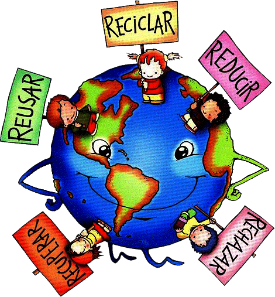

Cuidamos el planeta
Recolección y comercialización de residuos sólidos reciclables contribuyendo al mejoramiento del medio ambiente debido al buen manejo de las basuras y recursos aprovechables.
Creamos futuro
Reducir el impacto negativo de la contaminación en el medio ambiente.Generar conciencia sobre la importancia del reciclaje.
Identificar y plantear diferentes estrategias para la distribución y comercialización de los materiales reciclables.
Sensibilizar a la comunidad para que realice un debido proceso en la recolección, manipulación y separación de residuos sólidos desde las fuentes primarias. 